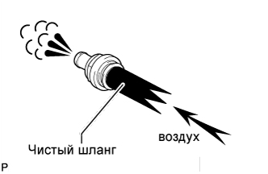
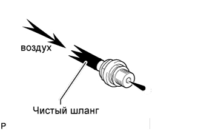

КЛАПАН ПРИНУДИТЕЛЬНОЙ ВЕНТИЛЯЦИИ КАРТЕРА > ПРОВЕРКА |
| 1. ПРОВЕРЬТЕ КЛАПАН ПРИНУДИТЕЛЬНОЙ ВЕНТИЛЯЦИИ КАРТЕРА В СБОРЕ |
|  |
Установите чистый шланг на клапан принудительной вентиляции картера.
Проверьте работу клапана принудительной вентиляции картера.
Подайте воздух со стороны головки блока цилиндров и убедитесь, что воздух проходит свободно.
|  |
Подайте воздух со стороны впускного коллектора и убедитесь, что воздух проходит с трудом.
Если результат не соответствует требованиям, замените клапан принудительной вентиляции картера в сборе.
Отсоедините шланг от клапана принудительной вентиляции картера.